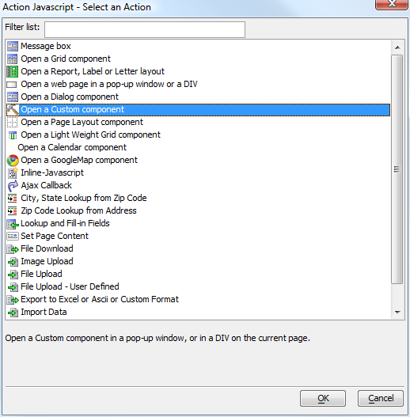
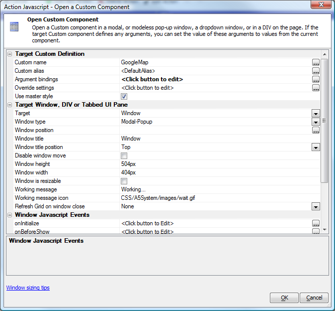
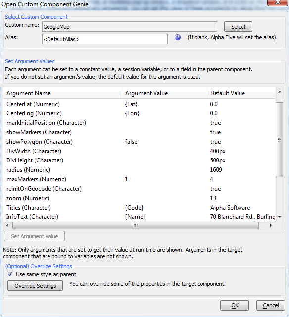
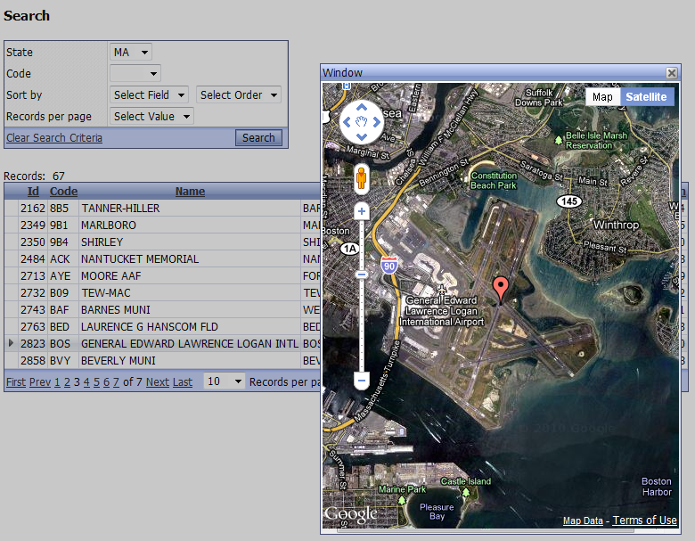

Custom Components
In Version 11, Alpha Five has added two types of reusable web components that can be created by any developer with a good knowledge of Xbasic, HTML, and JavaScript. One type is the Custom Component, discussed in this article and those following. The other is the User-defined Component, which is both more flexible and harder to develop. We recommend starting by creating a Custom Component even if your ultimate goal is to develop a User-defined Component.Uses and Benefits of a Custom Component
In Alpha Five Version 10, you can open a Grid Component in a window, a DIV, or a Tabbed UI Pane, in a linked content section of another Grid, and in a row expander of another Grid. In Alpha Five Version 11, you can do all of those things with a Custom Component and a User-defined Component. For example, here are the possible Action JavaScript actions from one V11 installation:
When you pick the action to Open a Custom Component, you see a builder that lets you select the component and set its parameters:

A key benefit is that you can bind arguments in the Custom Component to the current row of a grid. In this case, we are binding a custom map component to a grid that has airport data including latitude and longitude:

At runtime, this lets us bring up a map for each airport:

Custom Component Videos
The Custom Component is for developers who want to generate the component using their own Xbasic code. These videos give a basic overview of the Custom Component. The explain what a custom component is, and show how the component can define arguments whose value can be passed in from the calling program.The videos show how a custom component can be called from a Grid component and how the values of the arguments defined in the custom component can be passed in from data in the current Grid row.
Next the videos demonstrate a more realistic example where the Custom Component is used to define a pie chart displaying the breakdown of items on an order.
Watch Video 1
Watch Video 2
Watch Video 3
See Also
The articles that follow explain the JavaScript helpers for Custom components, how to create a Custom component, the function of the various parts of the Custom component builder, and how a Custom component can be shared and reused.- Using the Custom Component JavaScript Class V11
- Creating a Custom Component V11
- Custom Component Sections and Events V11
- Sharing and Using a Custom Component V11
In addition, see User-defined Components V11 and Grid, Dialog and Custom Components Storing state information V11.